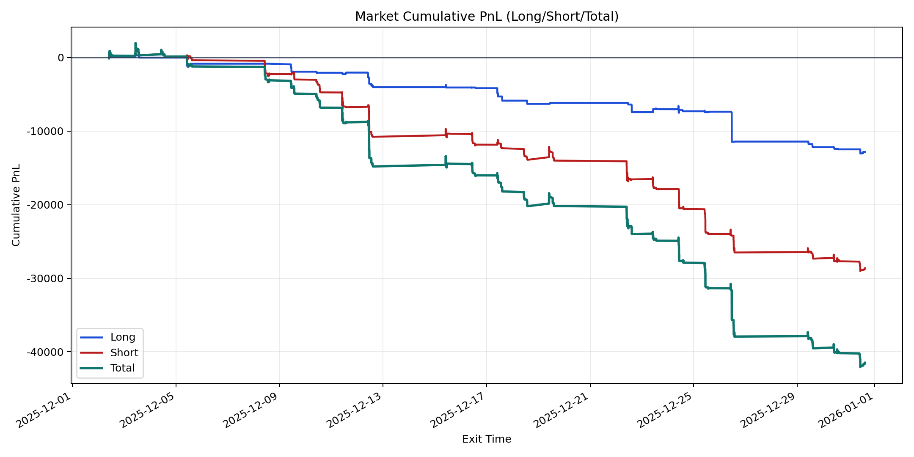
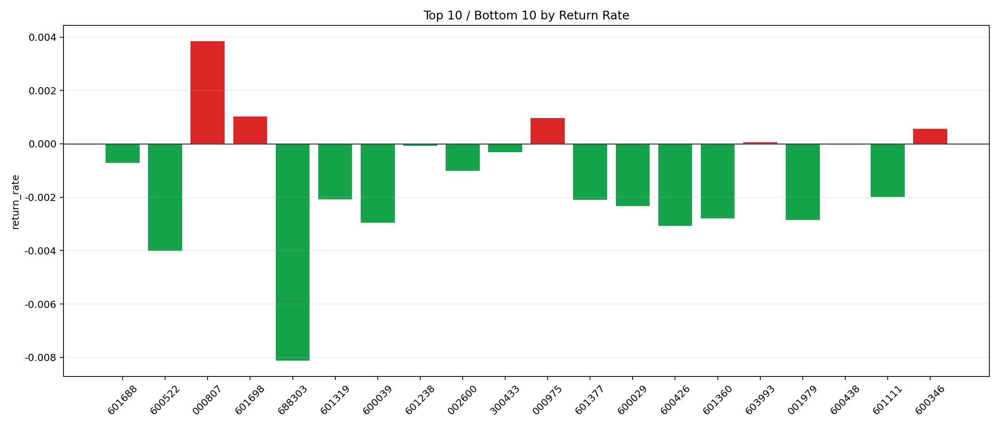

| repo_root | /home/haoranyou/data/output/dynamic_AUM_TAKER_index300 |
|---|---|
| period_months | 1 |
| period_label | 2025-12-02_to_2025-12-31 |
| start_time | 2025-12-02 09:50:17 |
| end_time | 2025-12-31 14:45:29 |
| n_trades | 1693 |
| n_symbols | 28 |
| total_pnl | -41483.836849999854 |
| long_total_pnl | -12843.958399999734 |
| short_total_pnl | -28639.878450000117 |
| total_entry_notional | 29064827.0 |
| long_entry_notional | 7060798.0 |
| short_entry_notional | 22004029.0 |
| total_return_rate | -0.0014272865567030505 |
| long_return_rate | -0.0018190519541841778 |
| short_return_rate | -0.0013015742912354878 |
| top_symbols_by_return | ["000807", "601698", "000975", "600346", "603993", "600438", "601238", "300433", "601688", "002600"] |
| bottom_symbols_by_return | ["688303", "600522", "600426", "600039", "001979", "601360", "600029", "601377", "601319", "601111"] |

